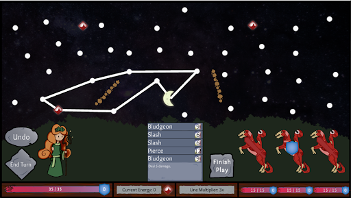
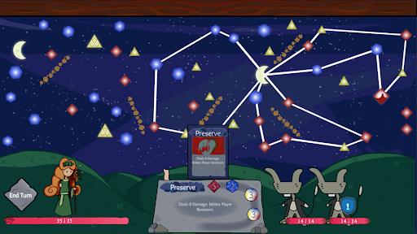

Introduction:
As my first independent game developed with a team, there was a lot that changed from initial ideation to release. This blog is a record of what changes were made over time and how my team reached these conclusions. For those who haven’t tried the game, I will discuss the main mechanics of Erin and the OtherWorld (EatOW) before jumping into how we arrived at the final build. The short description that most suits EatOW is connect-the-dots roguelike card game. The player starts with a deck of cards that have an energy cost associated with them. These energies can be three different colors: red, blue, and yellow; or, they could have no color requirements. Players need to collect energy by drawing a constellation on the star map. If you look at the adjacent image you can see what the map looks like without any drawings - a collection of variably colored stars dotting the sky. There is one Node Star which is the anchor point for all constellations. The player can click on other stars to create a line and then use that new star as a “jumping off” point. All stars except for the Node Star can have only two lines connecting to them. For each star connected, the player gets one energy with potential bonuses given out for players who connect multiple stars of the same color in a row or who make long lines when creating constellations. he catch is that the player must finish a constellation at the Node Star, so planning how to get the most energy and get out is imperative. With the basic mechanics under our belt, let’s jump into specific design elements.
Changes over Time
First Version
An element of continuity from earlier in the stages of the game’s design was the stars and constellations, which from a structural and code perspective have remained the same. All stars are essentially nodes in a network that have a “previous” and “next” star. Every time the player clicks on a star, that data gets filled in for all the connecting stars. The way we prevented the player from clicking on a star too many times was simply by disabling the “click” function if a star has been labeled as “next.” This indicates that the player has connected that star to another. In conjunction with this, we used a list in a manager script that contained all stars that were in the currently active constellation. When the player finishes a constellation and connects it to the Node Star, a finishing script is run that loops through the list data structure and tally up the energy and any additional benefits.
Second Pass
So besides all the UI and art changes, the major developments between the previous build and the current one (February to April) were the introduction of the colored stars and a queue for cards. I will begin with the colored stars as this was the simplest change. It was necessary to create a system by which the player made decisions on where to spread out constellations and how to connect them. As the player is not able to overlap lines, every time the player connected stars they prevented themselves from reaching others. Diversifying the types of stars by adding in energy types forced players to value some stars over others, enhancing the strategy element of the game by encouraging players to optimize colors within their constellations.
The Altar was a mechanic where the player, instead of having a hand of cards they choose from, had a queue of cards that they were required to play in order. Following the completion of a constellation, the first “card ball” in the queue gets “popped” and transformed into a card that the player is able to drag and drop the card onto themselves or enemies for an effect. After the first card gets played, if there is extra energy left over, additional card balls get “popped” until there is no energy left (card balls continuously refill). As the energy clears before starting a new constellation, the game design necessitated maximizing the amount of cards you could get in a constellation: no more, no less. If the player goes over in energy, they are not only wasting energy but also locking themselves out of areas of the map by creating constellations that are larger than necessary.
Third Pass
The time between this version of the game was much longer (April-December). Initial feedback after demoing the game noted that players were becoming frustrated because of the clearing of energy. Playtest notes showed that players were not correctly understanding what was happening during gameplay and would subsequently make poor decisions in the game. This created a significant power dichotomy in which players who were experienced in the game would rapidly win, while players who were less experienced and made more frequent mistakes would lose quickly.

Some of our problems with the game were balance related but the c\ore of our issues were design related. This was the crux of development where we could pivot the game in many ways based on what game feel we wanted to enforce. After reaching consensus, the development team decided to shift development towards a more relaxed and affordance-based system. Clearing energy was removed, and rather the first card spawned as soon as the player had enough energy. Then we needed to signpost if a move was valid or not so we added a dashed hover line to show if they could connect to the hovered star. To demonstrate how much energy the player would get we had popups appear above the stars once they were hovered/clicked on so that the user could immediately count and tell how much energy they were going to get. All of this was done to relax the game and allow the player to focus more on the constellation drawing without stress.
Final Build
The last major feature that we added to the game was a moving camera. Our initial versions of the game had super wide maps which made it hard for the player to reach the edges and make use of the full play space. The team knew that to optimize constellation drawing we needed to separate the star maps from the player and enemy characters. At first we were unsure how to split these two systems cleanly but while we were playtesting the team realized the solution: add a pan up with the camera so that the stars were one screen height above the altar and characters. n gameplay terms this meant that the player would have the enemies on the initial screen, and once the cardballs got loaded in, the player could press a button to move the camera up to where all the stars were. A major reason that we landed on this solution was that the game was a little too static. The characters and stars has idle animations and there was some motion with cardballs but we wanted another dynamic element that would be in theme. Thematically this solution worked well because the player was almost now “looking up” to see the stars but on a mechanical level it was important that we gave the player all the room on the screen to make constellations.
Conclusion
Through it all the core idea of the game, making constellations to play cards, stayed consistent. Colored energy was added as an incentive to draw in different areas of the map, and the altar queue was important for making sure we were always bottlenecking the player into focusing on how to get the most energy for the currently shown cardballs instead of choosing only to play only cards of one color from the original hand idea. We added quality of life features after playtesting like not clearing the player’s energy and adding more UI signaling while drawing. Development is difficult and no game ever is as you imagined nuttThe features we added were came out of the iterative creative process and served the game well as ways to supplement the core feedback loop of drawing constellations and playing cards.